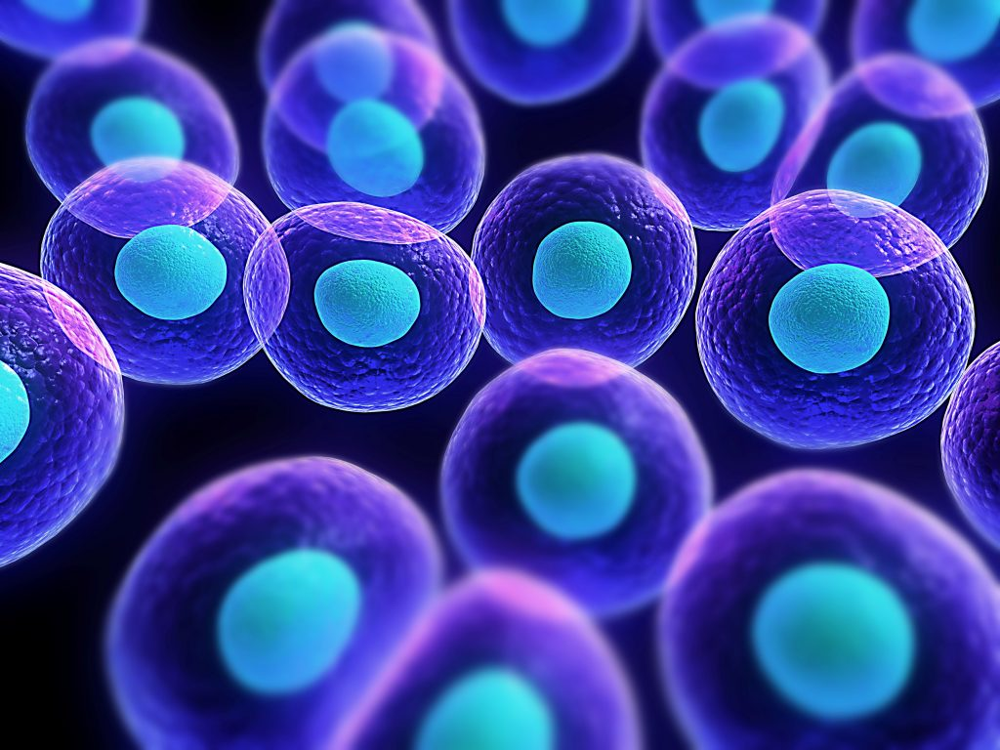

Sel adalah unit struktural dan fungsional terkecil dalam hierarki kehidupan. Ada dua jenis sel: prokariotik dan eukariotik. Sel prokariotik tidak memiliki membran inti, sedangkan sel eukariotik memiliki membran inti. Prokariota, seperti bakteri, memiliki struktur yang lebih sederhana tanpa organel yang terbungkus membran. Sel-sel ini membentuk tubuh makhluk hidup dan memiliki peran penting dalam organisasi tubuh. Untuk mengamatinya, diperlukan mikroskop karena ukurannya sangat kecil.

Kembali ke Daftar Materi